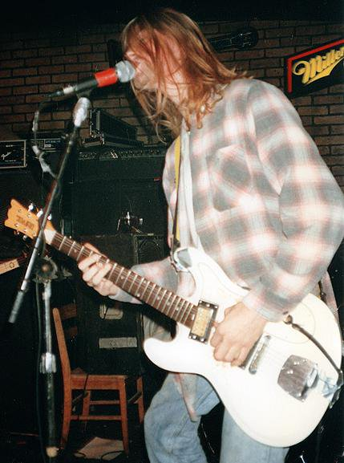
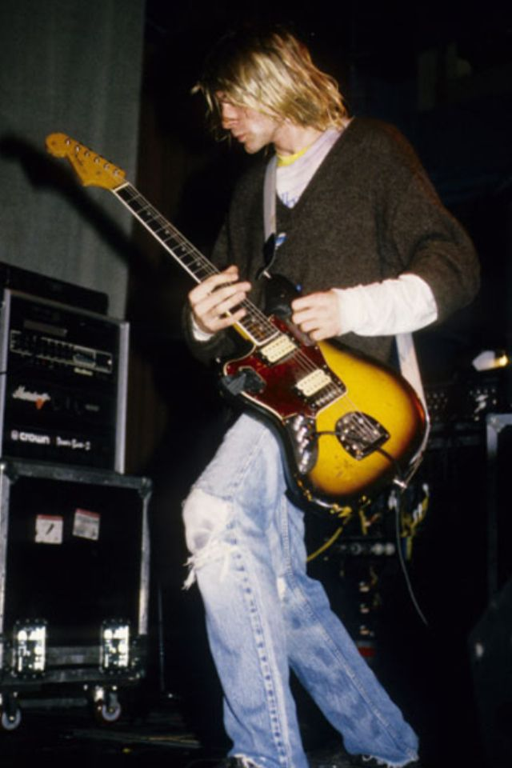

Univox Hi-Flier
Kurt Cobain's Univox was a guitar he used extensively during his time with Nirvana. The guitar was a 1960s-era Univox Hi-Flier guitar that he acquired sometime in the late 1980s or early 1990s. It was one of his favorite guitars and he played it on many of Nirvana's early recordings and live performances.

The Univox was first used on Nirvana's debut album, "Bleach," which was released in 1989. The guitar can be heard prominently on songs like "About a Girl" and "School." It was also used extensively on the follow-up album, "Nevermind," which was released in 1991. The Univox can be heard on songs like "Come as You Are," "Lithium," and "In Bloom."
Cobain made several modifications to the Univox to suit his playing style and preferences. He replaced the original single-coil pickups with higher-output humbuckers, which gave the guitar a heavier sound. He also added a Gotoh bridge and a custom-made pickguard, which featured a hand-drawn smiley face. Additionally, he often played the guitar with the neck pickup turned off and the bridge pickup turned all the way up, which gave the guitar a distinctive sound.
Overall, the Univox was an important instrument in Cobain's career and played a significant role in shaping the sound of Nirvana.
Fender Jaguar
Kurt Cobain's Fender Jaguar is perhaps his most iconic guitar and is closely associated with his time in Nirvana. The guitar was a 1965 Fender Jaguar that he acquired in 1991, and it quickly became his go-to instrument for much of his later work with the band.

The Fender Jaguar can be heard on many of Nirvana's most famous songs, including "Smells Like Teen Spirit," "Heart-Shaped Box," and "All Apologies." Cobain was particularly fond of the guitar's distinctive, jangly sound and often used its vibrato bar to create unique and unpredictable effects.
Cobain made several modifications to the Fender Jaguar to suit his playing style and preferences. He replaced the original bridge with a Tune-O-Matic bridge, which made it easier for him to change strings and adjust the guitar's intonation. He also added a second volume control and a second tone control, which allowed him to switch between different pickup configurations quickly.
One of the most distinctive features of Cobain's Fender Jaguar was the piece of duct tape that he placed over the guitar's pickups. He did this to dampen the sound of the guitar and reduce unwanted noise, which was particularly important given the high gain and distortion that he often used in his playing.
Overall, the Fender Jaguar played a significant role in shaping the sound of Nirvana and remains an iconic instrument in the history of rock music
Martin D-18
Kurt Cobain's Fender Jaguar is perhaps his most iconic guitar and is closely associated with his time in Nirvana. The guitar was a 1965 Fender Jaguar that he acquired in 1991, and it quickly became his go-to instrument for much of his later work with the band.
 The Fender Jaguar can be heard on many of Nirvana's most famous songs, including "Smells Like Teen Spirit," "Heart-Shaped Box," and "All Apologies." Cobain was particularly fond of the guitar's distinctive, jangly sound and often used its vibrato bar to create unique and unpredictable effects.
The Fender Jaguar can be heard on many of Nirvana's most famous songs, including "Smells Like Teen Spirit," "Heart-Shaped Box," and "All Apologies." Cobain was particularly fond of the guitar's distinctive, jangly sound and often used its vibrato bar to create unique and unpredictable effects.
Cobain made several modifications to the Fender Jaguar to suit his playing style and preferences. He replaced the original bridge with a Tune-O-Matic bridge, which made it easier for him to change strings and adjust the guitar's intonation. He also added a second volume control and a second tone control, which allowed him to switch between different pickup configurations quickly.
One of the most distinctive features of Cobain's Fender Jaguar was the piece of duct tape that he placed over the guitar's pickups. He did this to dampen the sound of the guitar and reduce unwanted noise, which was particularly important given the high gain and distortion that he often used in his playing.
Overall, the Fender Jaguar played a significant role in shaping the sound of Nirvana and remains an iconic instrument in the history of rock music
Vandalism Stratocaster
Kurt Cobain's Vandalism sticker Stratocaster is one of the most iconic guitars in rock history. The instrument was a 1965 Fender Stratocaster that Kurt bought at a pawn shop in Los Angeles in 1991. The guitar was initially painted blue, but Kurt vandalized it with stickers, graffiti, and other modifications that gave it a raw, DIY aesthetic. The most prominent feature of the guitar was a large "Vandalism" sticker that Kurt placed on the body.

Today, the Vandalism sticker Stratocaster remains an object of fascination and inspiration to musicians around the world. Its unique look and sound embody Kurt's creative spirit and the raw energy of Nirvana's music, making it an enduring icon of rock and roll history.